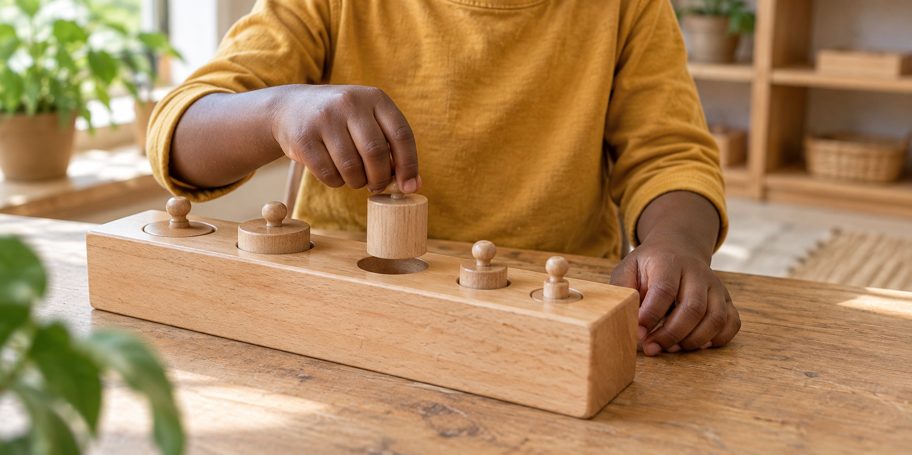

Language & Literacy
Reading, writing, vocabulary, comprehension, grammar, storytelling and communication. A deeper relationship with language.
African Montessori Hub · Learning support
Small steps. Big possibilities.
Targeted Montessori learning.
Individual growth. A love of learning.
A supportive place for children and adolescents to strengthen skills, explore their interests and rediscover the joy of learning.

Meet the child where they are
MsC complements regular schooling, homeschooling or another educational pathway. It is a learning support program rather than another school.
The Montessori Support Center is AMH’s targeted learning intervention program for families seeking a different kind of learning support. In a carefully prepared Montessori environment, learners strengthen foundations, receive individualised academic support and explore their interests.
Every child learns differently. Some need more time with a mathematical concept or reading and language. Others need to rebuild confidence, curiosity or motivation, or thrive through movement, exploration and concrete materials.
Our practitioners observe each learner’s strengths and opportunities, then create an individual pathway. The aim is deep understanding, confidence, independence and the experience of being a capable learner.
Room to wonder. Space to discover.
Targeted support and open-ended exploration bring learning within reach.
Reading, writing, vocabulary, comprehension, grammar, storytelling and communication. A deeper relationship with language.
Number, operations, place value, fractions, geometry, measurement and problem-solving, moving from hands-on discovery towards abstract thinking.
Experiments, observation, nature, biology, physical science, environmental studies and research. Space to ask how the world works.
Geography, history, art, music, human societies and interdisciplinary projects that connect learners with the wider world.
Concentration, organisation, responsibility, time management, problem-solving and decision-making help children take increasing ownership of their work.
Understanding comes first
Through observation and engagement, practitioners identify where a learner is developmentally and academically, then choose materials, lessons, activities and projects that respond to their needs.
Children can see, touch, manipulate and investigate ideas before being expected to understand them only on paper.
The child grows.
The approach grows too.
A learner finding mathematics difficult may return to concrete materials to build understanding through their hands.
A developing reader may need more intentional language experiences, with opportunities to listen, speak, read and write.
An adolescent may find renewed purpose through a meaningful project that brings academic skills into the real world.
Curiosity is enough.
Consistency, with room for family life
Three days each week create space for relationships and consistent learning, while maintaining flexibility for families.
For younger children, the emphasis is independence, concentration and joyful exploration, with solid foundations for learning.
As children grow, reasoning, research, collaboration, problem-solving and interdisciplinary learning become part of purposeful work.
Adolescents pursue meaningful interests, strengthen academic foundations and develop greater ownership of their learning.
A learner’s experience may include individual or small-group lessons, uninterrupted work periods, Montessori materials, reading and writing, mathematical exploration, science investigations, collaborative projects, outdoor or cultural learning and independent study.
A shared learning journey
Families receive feedback on progress, emerging strengths, areas needing support and ways to reinforce learning at home. Where appropriate, practitioners can work alongside families and schools to create continuity.
Understand what your child is learning, and how your child learns best.
More Than Intervention
We want children to experience the moment when something difficult begins to make sense. To ask questions, investigate ideas, make mistakes, try again and discover the satisfaction of mastering something through their own effort.
MsC is designed to complement regular schooling, homeschooling or another educational pathway, offering targeted support and exploration three days each week.
No. MsC also welcomes children seeking enrichment, challenge, hands-on experiences or opportunities to explore Montessori.
Families receive feedback about progress, emerging strengths, areas needing support and ways learning can continue at home.
Let’s begin with your child
Tell us about your child, their interests and the support you are looking for. Our team can help you explore whether MsC is a good fit.
Talk to us about MsC31 Ashburton Road, Chadcombe, Harare